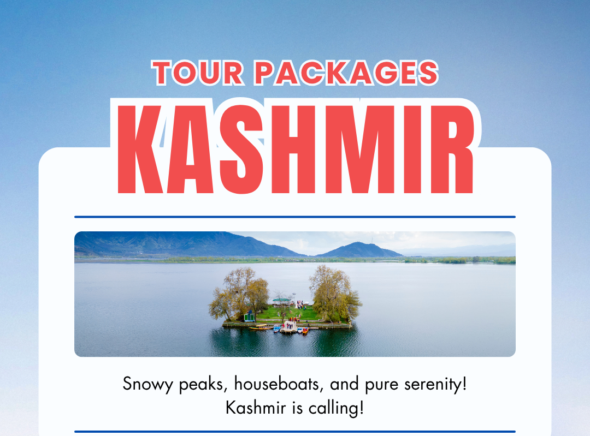

Home>Kashmir Tour Packages
Kashmir Tour Packages
5 Packages
Plan your trip to Kashmir with our Best Kashmir Tour Packages at best prices and discounts. Kashmir also called “Paradise on earth”, is a enchanting tourist destination offering scenic natural views, lush green landscapes, breathtaking snow clad mountains, beautiful valleys, pristine lakes, rich cultural heritage and warm hospitality. Experience the best of Kashmir beauty with MaximTrip’s well curated Kashmir packages which are designed to meet the needs of every kind of traveller. Our travel agency offers best deals on Kashmir trip packages whether you are looking for cheapest Kashmir trip or a luxurious Kashmir holiday. Our Kashmir packages provide you all the travel services which include pick drop, pre booked accommodation, meals, air ticket bookings, local sightseeing and outdoor activities. We have a team of expert local tour operators who are well aware of Kashmir’s climate, culture, famous places and unexplored attractions. They will create your personalized tour plan and will guide you about the best time to visit and affordable Kashmir packages. We offer customised Kashmir tour packages that can be created as per the choices and requirements of client. On your Kashmir trip, you can visit Srinagar, Gulmarg, Pahalgam and Sonmarg which are the most popular attractions in Kashmir. Our packages also provide iconic Shikara rides, stay in a houseboat, gondola rides etc. whether you are looking for family vacation, Kashmir honeymoon trip or Kashmir group tour, MaximTrip is ready to serve all kinds of clients. Kashmir Tour With MaximTrip Located in north India, Kashmir is a wonderland for nature lovers. From mighty snow clad mountains, serene lakes, charming gardens, verdant valleys, to lush green meadows, Kashmir offers everything. Whether you are looking for a leisure Kashmir family trip, or Romantic Kashmir honeymoon package and Adventure packed trip, MaximTrip offers all kinds of packages at reasonable prices. Local tour agents have extensive local knowledge, so its better to book your Kashmir trip with travel agents in Kashmir for a memorable and hassle free trip. Kashmir tourism is nothing without enjoying a pleasant Shikara ride in Dal Lake and gondola ride in Gulmarg which are top most travel activities of Kashmir. Kashmir is a ideal destination for all kinds of travellers who want to spend some calm time in the mesmerizing valley of Kashmir. Besides, places and activities, tourists can also enjoy here shopping. You can buy various local things such as Pashmina Shawls, carpets, paper mache products, saffron,dryfruits etc. MaximTrip offers Kashmir tour packages from all the major cities of India such as Delhi, Mumbai, Bangalore, Chennai etc. Grab the best deals and book now with us your next holiday to Kashmir. Our Kashmir tour packages from Mumbai allow you to explore the scenic beauty of Kashmir from the busy city life of Mumbai. Top Places To Visit in Kashmir Kashmir tour is all about enjoying scenic beauty and visiting beautiful tourist attractions. From charming valleys, tranquil lakes, vibrant gardens, rugged terrains, and verdant hill stations, Kashmir is a wholesome tourist destination. One of the best place to visit on Kashmir trip is Srinagar which features natural beauty and adventure. Other famous places include Gulmarg, Pahalgam, Yusmarg, Doodhpathri, Gurez valley, Nishat bagh, Betaab valley and many more. Below are some places that are worth to visit on your Kashmir tour package: Srinagar: Located on the banks of river Jhelum, Srinagar is one of the most beautiful tourist attraction of Kashmir. The city is surrounded by majestic snow clad Himalayas and features colourful Mughal gardens, sparkling lakes, beautiful Shikara boats, houseboats, bustling shopping markets and historic monuments. Srinagar also offers opportunities for many adventure activities such as trekking, para gliding, golfing and photography. Whether you are looking for Kashmir family trip or Kashmir couple tour, Srinagar is a perfect place for families and newlyweds. Your Kashmir tour is incomplete without visiting Srinagar which is a spellbound place. Pahalgam: With our Kashmir package, you can visit this quaint hill station which is situated 90 km away from Srinagar in Anantnag district. Also known as “Valley of Shepherds”, Pahalgam lies on the banks of Lidder river and is blessed with scenic views of lush green landscapes and mighty Himalayan peaks. You can also visit many tourist attractions here such as Betaab valley, Aru valley, Baisaran valley, Chandanwari, and Shehsnag lake. Gulmarg: Perched at an altitude of 2,650 meters, Gulmarg is a famous honeymoon destination and skiing resort. Surrounded by snow clad mountains, flower valleys and lush meadows, Gulmarg is famously called “Meadow of flowers”. On your Kashmir tour, you can enjoy several other tourist attractions in Gulmarg such as Baba Reshi shrine, Maharani temple, Apharwat peak, St. Mary’s church and Alpather lake etc. the place is also full of adventure and you can enjoy here skiing, pony riding, trekking, snowboarding and the world famous Gondola cable car ride. Yusmarg: It is another tourist attraction to explore on your Kashmir trip package. It is located 45 km from Srinagar at a height of 7,861 meters in the Budgam district of Kashmir. Featuring lofty mountains, dense forests, green pastures and vast landscapes, Yusmarg offers several outdoor activities such as camping, trekking, nature walks and horse riding. Gurez Valley: Gurez is a breathtaking tourist attraction which you must definitely include in your Kashmir package. Located 123 km from Srinagar, Gurez is a haven for adventure freaks and nature enthusiasts. The valley is blessed with sheer natural beauty and provides peace of mind away from the daily hustle of life. You can enjoy here nature walks among the charming villages, picturesque lakes and high altitude mountain passes. You can also try cuisine of Gurez which includes Rogan Josh, Dum Aloo and Yakhni. Doodhpathri: It is another attraction which is located 42 km from Srinagar. It is an unseen place which is yet to be explored by tourists. The valley features lush meadows, cascading streams and tall pine and fir trees. On your Kashmir tour, you can enjoy here pony riding, trekking and picnics amidst the snow capped mountains. Best Time to Visit Kashmir Kashmir is a year round tourist destination which looks magical in every season. Travellers from all over the world visit Kashmir to spend vacations with family, spouse and friends. Summer: Kashmir is called heaven on earth that looks charming in the summer season. From March to September, the weather remains sunny and pleasant in Kashmir which allows tourists to explore all the famous places without any difficulty. Summer offers beautiful views of pristine Nigeen and Dal lakes, Mughal gardens, hill stations and much more. Summer is also the perfect time for adventure things such as trekking, Shikara rides, fishing, rafting etc. enjoying delicious cuisine also makes your Kashmir tour memorable. Winter: For snow sport lovers, Winter is the right time to book Kashmir trip. From November to February, Kashmir receives heavy snowfall turning it into a snow paradise. Tourists can enjoy skiing in Gulmarg and snowboarding, snow sledding in Pahalgam and Sonmarg. How to reach Kashmir Kashmir is accessible via all three modes of transport which include flights, road and railways. The most convenient and quick way to reach Kashmir is by a flight. By Flight: Kashmir has well maintained international airport situated in Srinagar. You can book a flight from any city of India via Delhi or direct and reach Srinagar. After landing in Srinagar, you can begin your Kashmir tour and explore all the tourist attractions. By Road: You can also reach Srinagar by bus, cab or taxi from any state of India. By Rail: Jammu tawi is the only railway station to reach Kashmir. Book a train ticket to Jammu tawi and then travel by cab to visit Kashmir. Things to do on Kashmir Tour In addition to raw natural beauty, Kashmir trip also offers great adventure opportunities. With travel agents in Kashmir, you can enjoy many fun filled activities which are described as under: A serene Shikara ride in Dal Lake: Shikara ride is a must travel activity to be enjoyed on your Kashmir tour package. It is a traditional boat designed with vibrant colours and canopies for protecting against sun rays. On a Shikara ride in Dal Lake, you can enjoy panoramic views of the lake and mighty snow clad mountains. You can also visit floating markets, chaar chinari, Hazratbal shrine on a Shikara ride providing you a unforgettable experience of your Kashmir holiday. Houseboat Stay: Apart from luxury hotels and resorts, you can also stay in a houseboat on your Kashmir tour. Houseboats are well crafted mini hotel like boats with Kashmiri style architecture. These houseboats are characterized by fine dining rooms, spacious bedrooms with attached washrooms, balcony, wifi connections, ac rooms, and laundry facilities. From luxury to budget and eco friendly houseboats, tourists can choose any one based on their choice and budget. Gondola ride in Gulmarg: Gondola ride in Gulmarg is one of the most famous travel activity which is a must include thing in every Kashmir holiday package. Gondola is the highest cable car ride in world perched at an elevation of 3,980 meters above sea level. You can enjoy aerial views of meadows and snow moutains via a Gondola ride in Gulmarg. Book your Gondola ticket from Gulmarg resort and get ready for a thrilling adventure trip. Explore Mughal Gardens: With our Kashmir tour package, tourists can also explore the serene Mughal gardens of Kashmir. These gardens were constructed by Mughal emperors with beautiful architecture such as terraced lawns, stunning fountains and colourful flower beds. The most popular Mughal gardens are located in Srinagar district along the banks of Dal Lake. Some of the renowned Mughal gardens which you can visit on your Kashmir trip are Nishat bagh, Shalimar bagh, Pari Mahal and Chashma Shahi. Golfing in Kashmir: Enjoy golfing on your Kashmir trip which is a interesting sport. Gulmarg Golf course is one of the highest golf course in the world which is located at an height of 8,500 feet above sea level. Golfing in Gulmarg is a unique experience amidst the lush greens, snow capped mountains and pine and chinar trees. Trekking in Kashmir: Trekking is another adventure activity to include in your Kashmir tour package. It is a way of connecting with local culture, nature and spirit of thrill. Kashmir treks offer you amazing views of snow mountains, glaciers, pristine lakes, and panoramic sunsets. One of the most popular and thrilling treks in Kashmir are Great lakes treks such as Tarsar Marsar trel, Kolahoi glacier trek and Gangbal trek. Kashmir Tour Packages with flight We offer best Kashmir Tour Packages with Flight and provide the perfect tour experience for honeymoon couples, families, and adventure seekers. Whether you are planning a summer retreat or a winter escapade, our carefully curated itineraries ranging from 3 Nights 4 Days to 7 Nights 8 Days are designed to provide a memorable Kashmir trip experience. Being a local tour and travel company with over 10 years of experience,we are best in arranging Kashmir holiday packages with top notch travel services. Our Kashmir trip Packages for family with Flight are tailored to suit the budget of every client. From cheapest and affordable options to luxurious tour packages, MaximTrip has everything to offer. We offer best Kashmir family tour packages and Kashmir tour packages for couples at affordable rates. With unbeatable prices, exclusive discounts, and offers, we ensure that your Kashmir tour package with Flight provides great value for money without compromising on quality. Our dedicated team of local tour consultants offers you 24/7 assistance during your entire tour ensuring a seamless travel experience. We offer the cheapest tour packages for Kashmir with flight, best hotels, meals, pick and drop from airport, sightseeing etc. Explore the famous tourist attractions of Kashmir and indulge in the best things to do with our expert-guided tours. Let us help you create unforgettable memories with our Kashmir Tour with Flight, featuring personalized itineraries and a stress free holiday. Book your Kashmir Tour Packages with Flight today and embark on a journey like no other. Best Kashmir Tour Packages MaximTrip is one of the best Kashmir Tour Operator that offers Best Kashmir Tour Packages & Srinagar Holiday Packages at reasonable prices. We are the best local Kashmir Tour Operators in India for best Kashmir Trip Packages. Our travel agency offers local tours to most exotic travel destinations in Jammu, Kashmir and Ladakh such as Gulmarg, Pahalgam, Sonmarg and Srinagar, Amarnath, Pangong lake, Nubra valley, Drass, Lamayuru, VaishnoDevi, Katra, Patnitop, and more. We provide short and long Kashmir Tourism Packages which include tour places like Srinagar, Gulmarg, Pahalgam, Sonmarag and Doodpathri in Kashmir and Katra and Patnitop if booked from Jammu. At MaximTrip, we have a team of Kashmir Tour Operators that offer you Cheapest Kashmir Holiday Packages from Delhi, Jammu, Katra and Patnitop, Srinagar and every other city. If you are planning to give your family or partner a holiday treat, then our Jammu and Kashmir Tourism Packages and Kashmir Trips are the best option. Kashmir is perfect for honeymoon couples, friends, family and adventure enthusiasts. if you are a first time visitor to Kashmir, then book your Kashmir tour package with MaximTrip, the best tour operator in Jammu and Kashmir. We have got Great offers suiting your budget and provide you with an wonderful experience of lifetime. We offer Kashmir tour packages from Delhi, Bangalore, West Bengal, Gujarat and other states and cities of India and from abroad as well. Kashmir Tour Package Price The cost of Kashmir tour package varies as per the number of people, number of days and type of accomodations. However, the Cheapest tour package for Kashmir starts from INR 8000 to INR 15000. We also offer Luxury Kashmir Packages that starts from Rs. 11000 and goes upto Rs. 47000. Book your preferred Kashmir Tour package and get ready for a journey filled with adventure and peace. Contact for Kashmir Tour Packages Contact us today for booking your Kashmir trip package. Whether you are planning a nature trip to Kashmir for the first time or a adventure tour, Maximtrip is here to ensure that your journey is seamless, enjoyable, and filled with cherished memories. Let us be your trusted partner in offering a memorable Kashmir tour experience. For queries and bookings, call us at 91-9797996205 or Mail us at: holiday@maximtrip.in
Filters
Price Range
₹100
₹25799
Approx price per person
Duration
Hotel Star Rating
Route City
Location
Valley Of Wonders
4 Days / 3 Nights